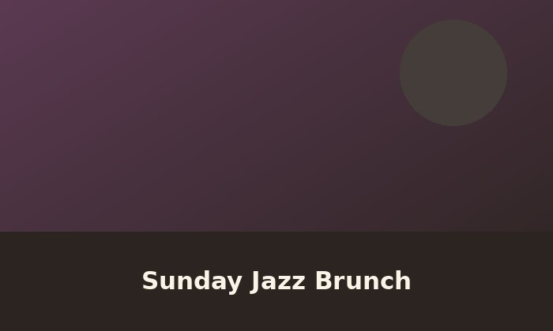
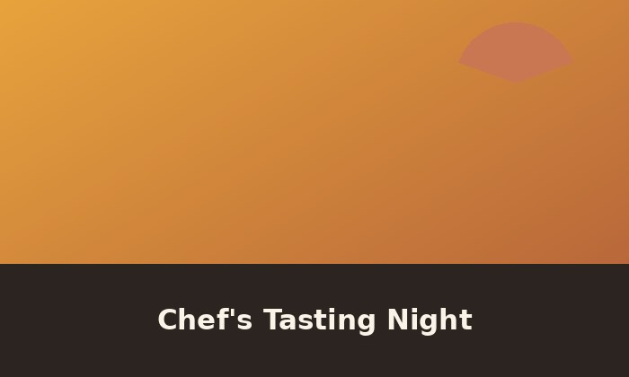
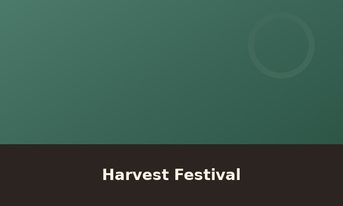

Special Events

Every Sunday from 10am to 1pm, we clear a corner of the dining room for a live jazz trio and swap our usual brunch menu for a family-style spread built around whatever's freshest that week. This event was inspired by our founder's first job, which held a similar event on friday nights. Reservations fill up fast, so call ahead if you want a table near the band.

On the first Thursday of each month, our head chef puts together a seven-course tasting menu that never repeats, drawing on whatever technique or ingredient has caught her attention that season. Seats are limited to twenty guests, and the menu is announced only two days in advance.

Each October we shut down the parking lot and turn it into a block party, with outdoor grills, a pop-up bar, and produce from every farm we work with throughout the year. It's part thank-you to our neighborhood and part excuse to cook outside for a change.